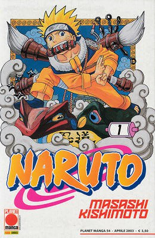

|

Naruto
Рейтинг: 8.4/10
|
| Жарық көрген жылы: |
21 қырқүйек, 1999 |
| Ел: |
Жапония |
| Аутор: |
Масаси Кисимота |
| Режиссер: |
Хаято Датэ |
| Жанр: |
Боевик, шытырман, фантастика |
Кішкене информация:
| |
Манга екі тараудан тұрады. Бірінші бөлімнің басында Наруто оқуын бітіріп, гэнин – бастауыш ниндзя атағына ие болады. Ол өзінің екі сыныптастары Саске Учиха мен Сакура Харуномен бірге сенсей Какаши Хатакэнің басқаруымен бір командаға түседі. Сюжеттің даму барысында Наруто жаңа достар тауып, Хокагэ болу мақсатына жету үшін жаңа қабілеттерге үйренеді. Қашқын ниндзя Орочимару ауылға шабуыл жасап, Үшінші Хокагені өлтіреді. Орочимару Учиха тегінен шыққан дарынды ниндзя Саскенің денесін иеленуді қалайды. Бірақ Саске өз қалауымен көптеген қабілеттерге иелену үшін, ағасы Итачиге кек алу үшін Орочимаруға барады. Оқиға басталмастан бұрын Итачи Саскеден басқа Учиха кланын жоқ қылады. Бұл іс-әрекет Саскеге әсер етіп, кек оның өмір сүру мағынасына айналады. Кетіп қалған Саскені кері әкелу үшін Конохадан тыс жерге барып, жаттығулармен шұғылдана бастайды. Ол аты аңызға айналған, Орочимарудың бұрынғы серігі Джирайямен келесі кездесуге дайындалу үшін айналысады.
Манганың екінші тарауы 28 томнан басталады. Ол жаттығудан екі жыл жарым өткеннен кейінгі оқиғаны сипаттайды. Басты кейіпкер 16 жаста болады. Джирайямен өткізілген жаттығулардан соң Наруто жасырын ауылға, Конохаға оралады. Бұрын Наруто, Саске және Сакурадан құралған № 7 команда құрамы өзгереді. Оның атауы «Какаси командасына» өзгертіліп, Саскенің орнына Сай есімді жас ниндзя келеді. Наруто және оның достарының қарсыластары барлық құйрықты аңдарды ұстап алуды меңзеген Акацуки ұйымы болады. Ал Саске Учиха Орочимарумен оқуды жалғастырудың мағынасы жоқ деген оймен оны өлтіреді. Сонымен қатар ол ағасы Итачиді тауып алып, онымен шайқасқа түсіп, жеңіс табады. Кейін Акацуки ұйымының лидері Тоби Саскеге шындықты айтады: Итачиге Учиха кланын жоюға жасырын ауылдың басшылары бұйрық берген екен. Кагелердің кездесуінде Тоби онқұйрықты бидзюдің, адамдарды басқара алатын иллюзияның пайда болуы үшін құйрықты аңдарды жинап жатқанын хабарлайды. Басқа ауылдардың басшылары Тобиға келісімдерін бермегенде, ол Төртінші Дүниежүзілік соғыстың басталғанын жариялайды. Бұған жауап ретінде бес ірі жасырын ауылдар бас қосып альянс құрып, басшы болып Райкагэ тағайындалады. Ал біріккен шиноби армиясының басшысы Казекаге Гаара болады. Екі жақты шайқас болады: бір жақта Акацуки ұйымы мен Дзецудің мыңдаған клондары және Кабуто Якусидің қабілетімен түзілген бұрын қайтыс болған ниндзялар, ал екінші жақта біріккен бес елдің шинобилары – әскерлері. |
|